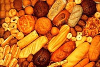
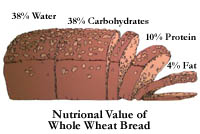
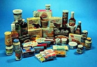
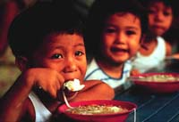

What is Food
Food & Nutrition
Food Industry
Food Processing
Food Safety
Hunger
| Food science uses the basic sciences and engineering to study the fundamental nature of foods and food processing. What is food made of? How can we analyse it? How nutritious is it? How can it be manufactured, processed and preserved? How can it be best distributed and marketed? These are all questions faced by the food scientist. In other areas, psychology and sociology are used to study eating habits and choice of foods. In North America the food industry is the largest employer, accounting for 20 percent of the work force. In Canada, the domestic retail and food services total about $82 billion annually and accounts for 8% of our Gross Domestic Product. |
|
What is Food?

What are the different kinds of food? How does local custom affect the kind of food we eat? Are we what we eat?
Food And Nutrition  Food supplies the body with edible biochemicals that are the building blocks for growth and maintenance. The energy for our everyday activities must also come from food. Which activities burn off the most energy? Check here to find out. Nutrition is also important in our overall health - helping us to fight off diseases such as cancer and heart disease. Understanding nutrition can be a lifesaver!
Food Industry
The agri-food industry employs one in five Canadians and contributes $60 billion annually to the GDP. Did you know that Saskatchewan has over 500 companies processing food employing over 8000 people? How many people do you know who work in the food industry? In this section we highlight the main industries of Saskatchewan: Biotechnology, Canola, Milk, Meat and Wheat
|
|
Food Processing
 How is technology applied to post harvest processing of agricultural products? What happens to the cereals, meat and dairy products after they leave the farm? Learn about the science of food processing.
Food Safety
The public expects that the food supply is safe from health risks. But how do we define "safe". For example we can eat foods that don't immediately kill us but contribute to heart disease or cancer. What responsibility lies with the consumer? Click here to find how more about food safety, risks and hazards.
Hunger  We can't talk about food without considering hunger. Hunger is a complex problem that affects all nations to some degree but is often associated with the dire poverty of the developing nations. Is there really a limit to how many people we can feed?
From additives, referring to substances added to food to improve quality to yoghurt, a semi-solid food, originating in Turkey, made by fermenting milk with a bacterium - if you need to look up an unfamiliar food science term or phrase, look in the agriculture glossary. |